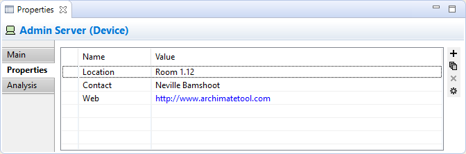
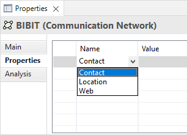
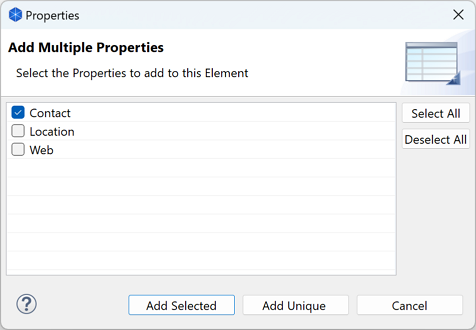

User Properties
User Properties can be created and managed from the "Properties" tab in the Properties Window.
The Properties Tab

User Properties
This tab allows you to add arbitrary User Properties, or attributes, to a Concept, Model, Folder, or View. For example you may wish to add information such as "Cost", "Location", "Duration", "Time", "Link" and so on. Properties are stored as name/value pairs. Properties with the same name may appear more than once in the model or object and values are free text.
If the value of a Property starts with "http://", "https://" or "ftp://" it will show in blue to denote a hyperlink and an icon will be displayed in the left column. Double-clicking on the icon will open the link in a Browser.
To Add a New User Property entry:
- Click on the "New" toolbar button to the right of the Properties table, or select "New" from the right-click menu, or double-click in an empty area on the table
- Edit the Property's Name in the table cell. If there are existing Properties used elsewhere in the Model you can select one of these instead from the combo box in the cell editor

- Edit the Property's value in the "Value" Cell
To Change an Existing User Property Name to a New or Existing Name:
- Click on the Property Name cell in the Properties table and type in the new name
- If there are existing Properties used elsewhere in the Model you can select one of these instead from the combo box in the cell editor
To Remove a Property Entry:
- Select the Property entry or entries you wish to remove
- Click on the "Remove" toolbar button to the right of the Properties table, or select "Remove" from the right-click menu
Note: Adding a new Property to an object in the Properties window means that it becomes available as a re-usable Property for all objects in the same model that have User Properties. Removing a Property in the Properties window only removes it from the selected object. If it is used in other objects it is still available.
To Re-order Property Entries by Drag and Drop:
- Select the Property entry or entries in the Properties table you wish to re-order
- Drag and Drop the entries in the in the Properties table to re-arrange them
To Sort the Property Names:
- Click on the "Name" table column header
- The Property Names will be sorted alphabetically
To Add a Hyperlink Property Entry:
- Select the Property entry in the Properties table you wish to use as a hyperlink
- Edit the value so that it contains a URL that starts with "http://", "https://" or "ftp://"
- Double-click the icon in the left column to open the link in a Browser
To Add New Property Entries using Existing Property Names:
- Click on the "New Multiple..." toolbar button to the right of the Properties table, or select "New Multiple..." from the right-click menu
- Select the Properties you wish to add from the dialog

- Press OK and then edit the new Values in the Properties table
To Manage and View User Properties Globally:
- Click on the "Manage" toolbar button to the right of the Properties table, or select "Manage" from the right-click menu
- The "Properties Manager" dialog appears showing all used Property keys in the Model globally and the number of times they have been used:

- You can Delete Properties here. All occurrences of the Property and its declared Values will be deleted from all objects that use it
- You can Rename Properties by editing the name in the "New Name" column. All occurrences of the Property Name will be renamed in all objects that use it